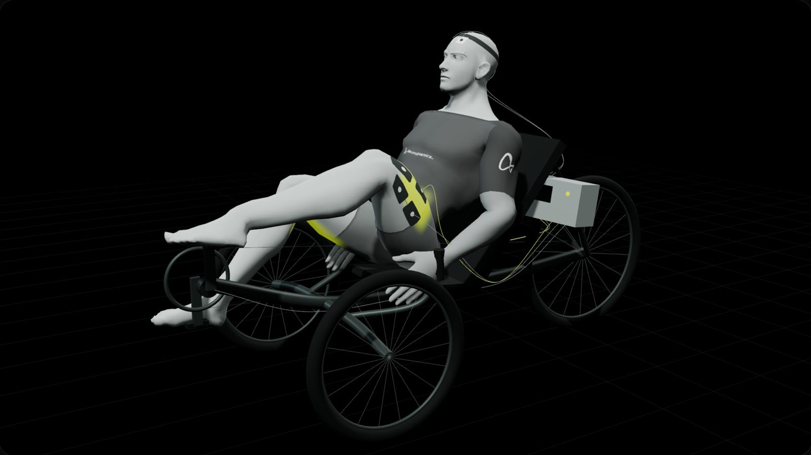
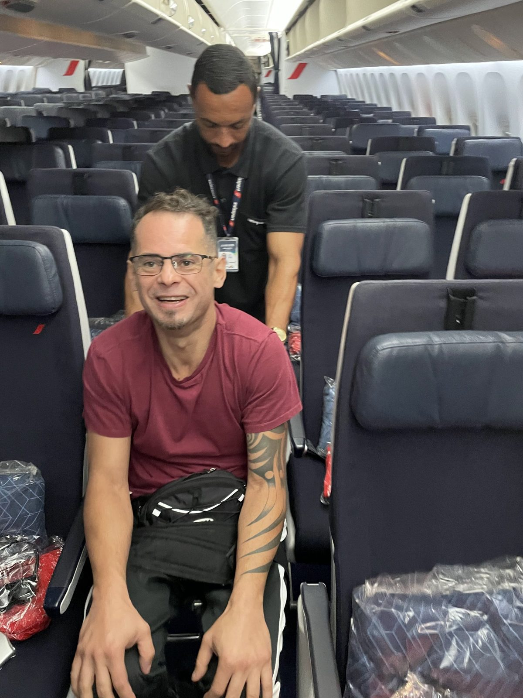
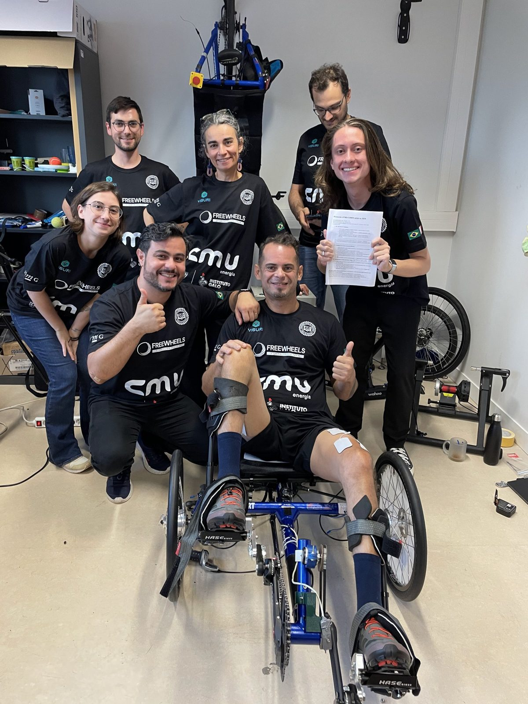
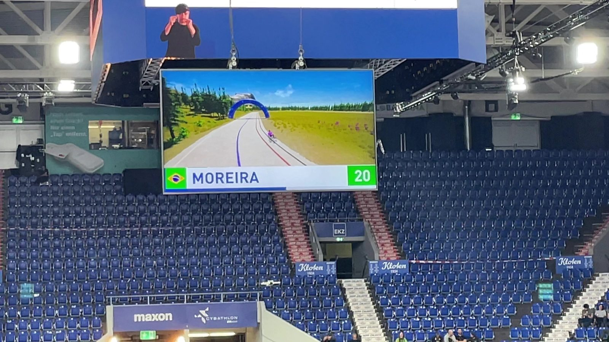
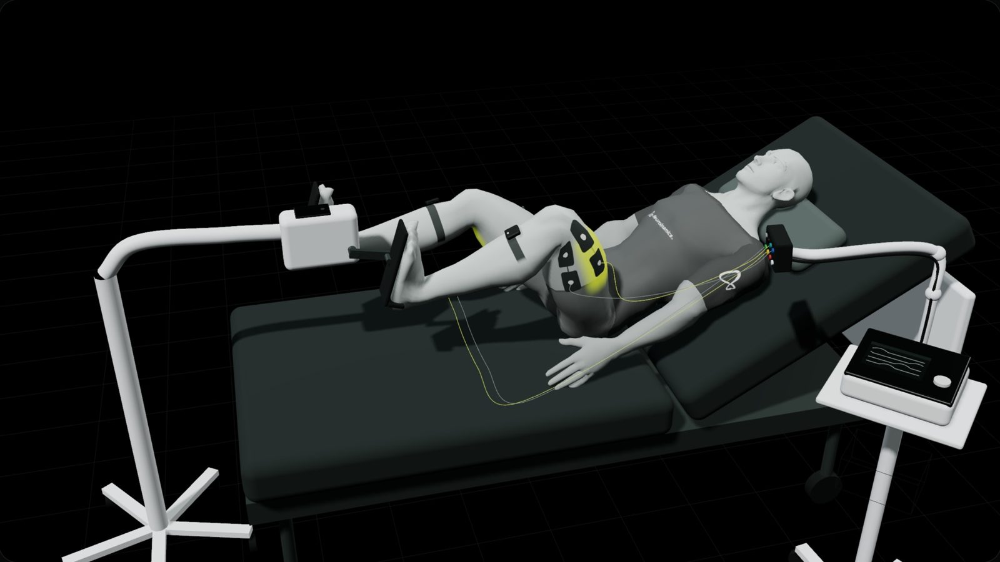
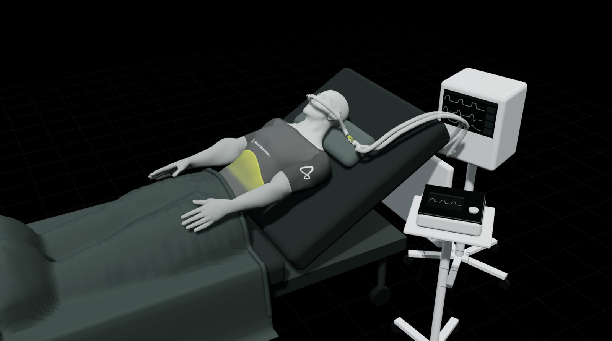

A história de Jônatas Moreira e da tecnologia criada na UFMG, que agora é pesquisada para ajudar pacientes de UTI a se recuperar mais rápido.
Jônatas Moreira perdeu os movimentos e a sensibilidade do peito para baixo depois de um acidente de moto, aos 25 anos. A lesão na medula é completa.
Com uma tecnologia da UFMG, os músculos paralisados das pernas dele voltaram a trabalhar, acionados por estímulos elétricos no ritmo da pedalada.
A mesma tecnologia é pesquisada para pacientes de UTI, inclusive sedados e no respirador, e para quem teve AVC. O objetivo é chegar ao SUS.
Em outubro de 2026, a versão sem fio, que transforma uma bicicleta ergométrica comum em equipamento de reabilitação, recebeu menção honrosa no Congresso Brasileiro de Engenharia Biomédica.
lugar no mundo no CYBATHLON 2024, que reuniu 24 países
anos de pesquisa na UFMG, desde 2016
frentes de pesquisa em neuroengenharia
Jônatas tinha 25 anos quando um acidente de moto lesionou sua medula, na altura da vértebra T4. Com a equipe da UFMG, passou a treinar no Centro de Treinamento Esportivo da universidade. Em março de 2024, já completava 11 voltas seguidas na pista, só com os músculos acionados pelo estímulo elétrico.
“O projeto me trouxe uma sensação que achei que nunca mais fosse sentir: de ver minhas pernas em movimento.”
A lesão na medula corta o comando que vem do cérebro, mas o músculo continua capaz de se contrair. O sistema faz o papel desse comando: lê cada pedalada e dispara pulsos elétricos leves na hora certa.

Lê, em tempo real, a posição do pedal.
O sistema, com apoio de inteligência artificial, escolhe qual músculo deve contrair.
Eletrodos na pele enviam pulsos elétricos leves.
Os músculos contraem na ordem certa e o pedal gira.
Nasce a equipe FreeWheels, parceria da UFMG com a Universidade de Brasília e a Universidade de Montpellier, na França.
Na pandemia, a CNN Brasil mostra a eletroestimulação em pacientes sedados com Covid-19.
Treino final em Montpellier, na França.
CYBATHLON, na Suíça: 9º lugar mundial na prova de ciclismo com estimulação elétrica. O evento reuniu 67 equipes de 24 países.
Nasce a NeuroDynamics, que leva a pesquisa a novos projetos de saúde.
A pesquisa aparece no Jornal Nacional.
Menção honrosa no Congresso Brasileiro de Engenharia Biomédica e seleção para os Proceedings do IEEE.



A vida de Jônatas além da pedalada, e o que mudou depois da Suíça.
Os bastidores: o treino final na França e o dia da prova, registrados em vídeo pela equipe.
A versão sem fio, premiada em 2026, que transforma uma bicicleta ergométrica comum em equipamento de reabilitação.
No Centro de Treinamento Esportivo da UFMG, onde Jônatas treina.
No LABBIO, o Laboratório de Bioengenharia da Escola de Engenharia, onde a equipe desenvolve a tecnologia.
Em projetos com hospitais parceiros, voltados a pacientes de UTI e a pessoas que tiveram AVC.
Parte desta história foi ao ar no Jornal Nacional em 27 de abril de 2026.
Na terapia intensiva, a prioridade é salvar a vida. Mas repouso, sedação e respirador cobram um preço: os músculos perdem força muito rápido.
do músculo, por dia, é quanto um paciente grave perde, em média, na primeira semana de UTI.
dos pacientes graves desenvolvem a chamada fraqueza adquirida na UTI.
Mais tempo no respirador, internação mais longa e recuperação mais lenta depois da alta. E cada dia a mais no respirador aumenta o risco de infecções, como a pneumonia.
Mexer o corpo cedo. Num estudo da revista The Lancet, 59% dos pacientes que se exercitaram ainda no respirador saíram do hospital andando e cuidando de si sozinhos. No grupo que começou mais tarde, foram 35%.
O desafio: muitos desses pacientes estão sedados. Não dá para pedir que eles façam exercício.

Eletrodos sobre os músculos das pernas recebem pulsos elétricos leves. Sensores acompanham a pedalada numa bicicleta de leito, e o sistema decide quando cada músculo deve contrair. Não é um motor que gira o pedal: são os músculos do próprio paciente que trabalham, mesmo sem ele conseguir comandar o movimento.
Músculos trabalhando desde os primeiros dias, para sair da UTI mais forte.
Menos tempo de respirador e de internação, com menos risco de complicações.
Cada dia a menos de UTI é um leito livre para outro paciente.

O diafragma é o principal músculo da respiração. Quando o respirador faz todo o trabalho, ele enfraquece depressa, e isso pode dificultar a retirada do aparelho. Num estudo com pessoas que dependiam totalmente do respirador, as fibras do diafragma encolheram mais da metade em menos de três dias.
A Opalina pesquisa como a neuroengenharia pode ajudar a cuidar desse músculo durante a ventilação mecânica.
Na Covid-19, dezenas de milhares de brasileiros precisaram de respirador. Muitos passaram semanas sedados e saíram da UTI sem força para andar, falar e até engolir. Em 2021, a CNN Brasil mostrou a eletroestimulação de músculos em pacientes sedados com Covid-19, com entrevista do Prof. Henrique Martins, coordenador da pesquisa na UFMG.
A NeuroDynamics é uma iniciativa sem fins lucrativos da Escola de Engenharia da UFMG, sediada no LABBIO, o Laboratório de Bioengenharia. Reúne estudantes e pesquisadores de engenharia e saúde.
Pedalar com estímulo elétrico, de atletas como o Jônatas a pessoas que tiveram AVC.
Exercício para pacientes sedados, que não conseguem se mexer sozinhos.
O cuidado do diafragma de quem está no respirador.
Ler no cérebro a intenção de mover e usar esse sinal para comandar o estímulo.
Sensores que medem o movimento e mostram a evolução da reabilitação.
Do sinal captado pelos sensores à decisão, no padrão que a medicina exige.
Um hospital público de BH que atende cerca de 70 mil pacientes do SUS por ano vai receber a bicicleta, segundo o Jornal Nacional.
A versão sem fio funciona em bicicletas ergométricas comuns, que muitas clínicas já têm.
Sem acionistas nem lucro a distribuir. O que a equipe capta volta para a pesquisa.
A pesquisa começou com o Jônatas. O objetivo é que essa tecnologia chegue ao maior número de pessoas, pelo SUS e a baixo custo.
Jônatas Moreira, atleta.
Prof. Henrique Martins, coordenador da pesquisa na Escola de Engenharia da UFMG.
Engenheiros, fisioterapeutas e pesquisadores da equipe.
neuroexperiencia.tech
A história de Jônatas em 2 minutos.
Mais de 80 vídeos e 130 fotos de 2024, muitos em 4K.